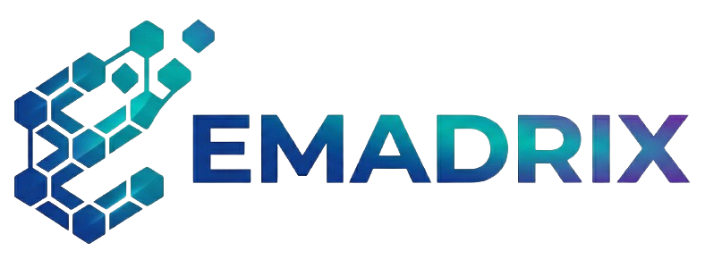

Transforme seu PCM com o software Emadrix. Controle ordens de serviço, indicadores e preventivas em uma plataforma robusta desenhada para a realidade industrial.
Começar AgoraA Emadrix entrega os resultados que o financeiro e a operação precisam.
Antecipe falhas antes que elas parem sua linha de produção. Aumente a disponibilidade de máquinas críticas.
Ordens de serviço 100% digitais. Acabe com os formulários rasurados e a perda de histórico no chão de fábrica.
Acompanhe MTBF, MTTR e custos de manutenção sem precisar de planilhas complexas ou processamento manual.
Funcionalidades pensadas por quem entende de manutenção.
Controle solicitações de compra e estoque de insumos como cantoneiras, chapas e tubos diretamente vinculados às OS.
Automatize o plano de lubrificação e inspeções periódicas, garantindo que nenhum ativo seja esquecido.
Seus mecânicos acessam e baixam ordens de serviço via tablet ou smartphone de qualquer lugar da planta.
Solicite um diagnóstico gratuito da sua gestão atual e veja como a Emadrix pode ajudar.
Conversar via WhatsAppcontato@emadrix.com.br